2015 Autumn Contest
Time: 19:30-21:30, Friday, August 14th
Venue: Room G849 New Main Building, Beihang University
Hey, I miss you so much!
Firstly, I want to say sorry for the cancel of the meeting last week as a result of bad raining. So this is our 106th meeting.
This Friday, Beihang Toastmasters become warriors on the stage.
They will fulfill their ambitions in Speech Contest.
And here we are, 2015 Beihang TMC Autumn Contest!
Speech Contest
Speech contests are an important part of the Toastmasters educational program. They provide an opportunity for Toastmasters to gain speaking experience, as well as an opportunity for other Toastmasters to learn by observing proficient speakers.
Competition begins with club contests and winners continue competing through the area, division and district levels. The International competition has two additional levels — semifinal and the World Championship of Public Speaking.In Toastmaster world, to take part in contests is the fastest way to improve oneself.
“The Pirates” from Beihang Toastmasters
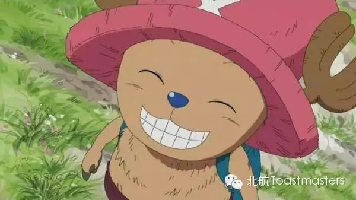
Jane（“船医”乔巴 Chopper）
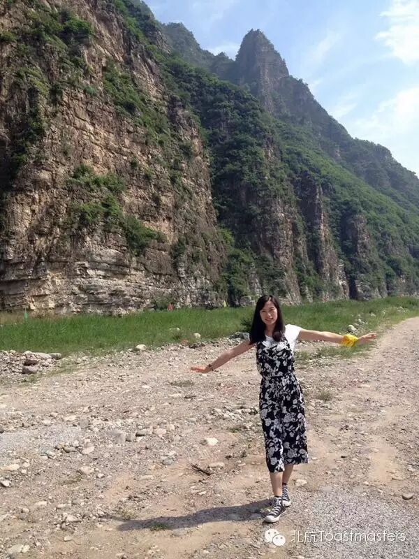
Jane之所以是乔巴，除了因为她“可爱多变”的外型，还因为她是北航头马的队医。身为白衣天使，我们的Jane姐姐悬壶济世、救死扶伤、敬老爱幼，美丽的外表搭配善良的内心。她不仅可以医你的病，还能治愈你的心。这一次看“乔巴”华丽变身吧。
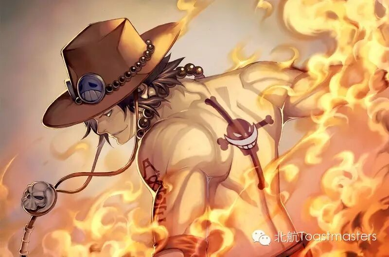
Mauna Loa（“火拳”艾斯 Ace）
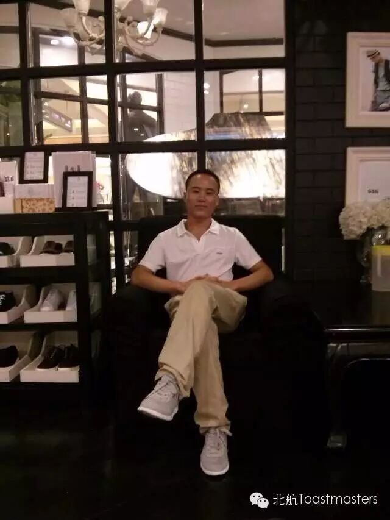
如果你对Mauna Loa这个名字感觉诧异，不用小编提醒你也会查一下的。他就是名副其实的火拳艾斯，我们的VPE“火山君”。他的火焰没有攻击性，而是让你感觉到温暖的存在。作为一名“哲学家”的他，这次终于可以用中文让你一饱他的风采了。
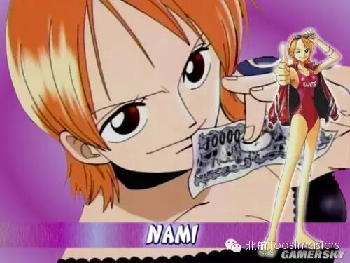
Joy（“小萌猫”娜美 Nami）
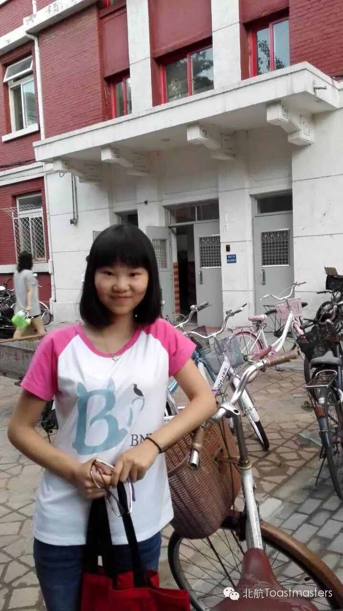
Joy确实是一只人见人爱的“萌猫”，多变的装束，温雅的性格，百变中充满亲和，是北航头马家族的一抹亮色。但不要以为只有这些，心理学专业的她可以洞察你的一切表情。这一次她又将给大家带来什么惊喜呢？让我们拭目以待吧。（别惦记，名花有主）
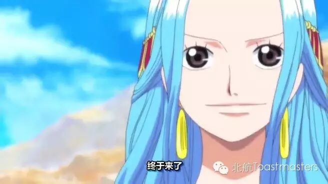
Nancy（薇薇公主 Vivi）
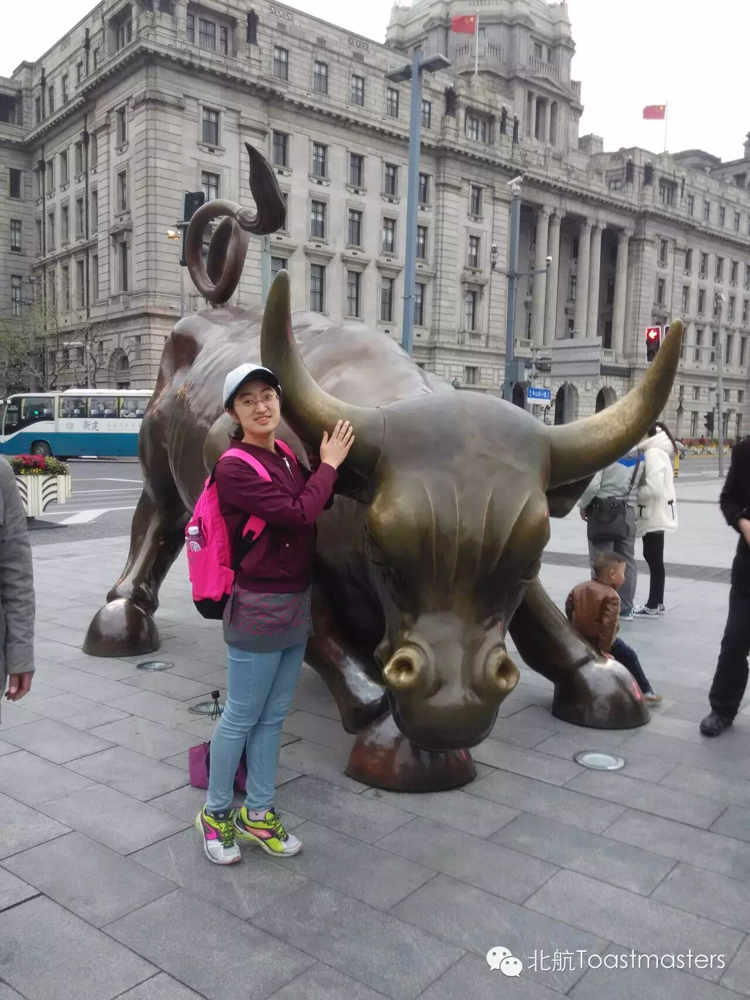
Nancy一直是我们最可靠的伙伴，她一定是可以让你第一眼就记住的女孩，就像漫画中的薇薇公主（海贼迷们一定不会忘）。她有着东北女孩的快乐与率真，有着金牛座的耐心和踏实。读过万卷书，行过万里路，她将带着自己精彩世界里的故事，等你倾听。
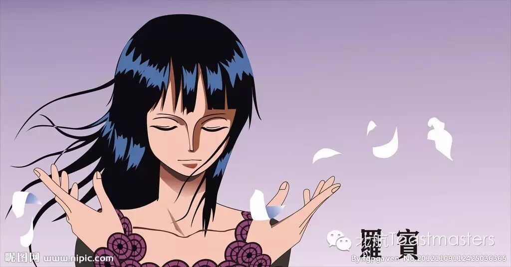
Vicky（“学霸”妮可·罗宾 Robin）
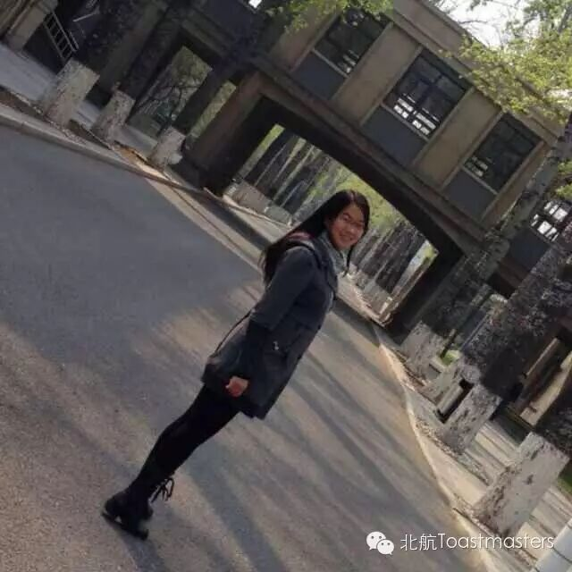
不要责怪小编，“学霸”是属于她最突出的字眼。但Vicky不是一名单纯的学霸，就像罗宾一样，总有着不为他人知道的故事。北航头马的停留与辗转让她悄悄认定这个校园必将是她人生路上的一笔浓妆，再次蜕变过的她将要告诉我们，什么是不一样的“学霸”。
Go For “One Piece”！
Meeting Agenda
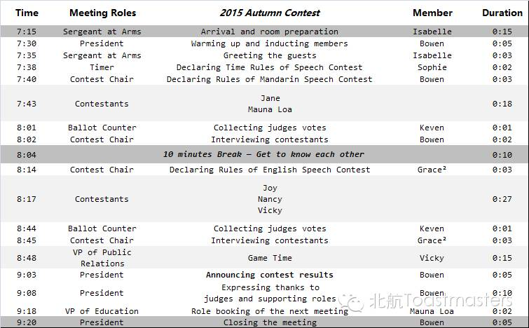
Map
Our meeting venue changed to RoomG849, New Main Building, Beihang University (北航新主楼G849房间). Click here to see large map. And you can phone to Bowen for help.
TEL: 15201653419
See you in the meeting!

https://mp.weixin.qq.com/s/vQi5fWZ7AMg-2WMQzt3f9A
本页为抢救式本地归档，图文已永久保存。